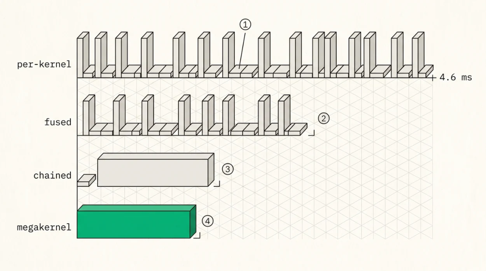

Kernel Fusion, Graphs, and Chained Dispatch
CHAPTER 25 · KERNEL FUSION, GRAPHS, AND CHAINED DISPATCH
The host overhead problem
Every kernel dispatch costs host time, constructing the packet, writing kernarg, ringing the doorbell, and, if you wait, polling the completion signal. Measured on mainarch’s unfused path that full cycle is about 13 µs , and an assembled Qwen3-architecture layer issued roughly 350 of them for 4.6 ms per layer . Across 94 layers that’s 430 ms per token, almost all of it the GPU waiting for the host.
Where did 350 dispatches come from? That number isn’t inherent, and knowing its composition tells you how to fix it. 136 of them were per-head QK-norm and RoPE launches, and 64 more were per-head attention launches, so a layer that batches those across heads has an order of magnitude fewer.
Which gives you three tiers of fix, in the order you should apply them. Fuse within a kernel , one launch over all heads instead of one per head, which is the biggest single win and pure kernel work. Remove the wait between launches through chained dispatch or graphs, which removes the round-trip rather than the launch. And remove the launch entirely with a persistent megakernel. Most engines stop after the second tier and are right to.
CHAPTER 25 · KERNEL FUSION, GRAPHS, AND CHAINED DISPATCH

FIGURE 25.1 Four ways to spend a layer’s worth of host time
1Per-kernel dispatch with a wait after each one. A measured layer issued roughly 350 of these at about 13 microseconds a cycle, so 4.6 ms of which almost all is the GPU waiting for the host.2Fusing the per-head kernels comes first and is the biggest single win, because 200 of those 350 launches were one-perhead QK-norm, RoPE and attention calls.3Chained dispatch, or a graph on a vendor runtime, removes the round trips rather than the launches. One doorbell, one wait.4A persistent megakernel removes the launches too, and its real prize is keeping activations in registers across what used to be kernel boundaries. The costs are occupancy coupling, deadlock risk, and losing every per-kernel timing you had.
Chained dispatch
The AQL barrier bit from Chapter 7 lets you enqueue a dependency chain and wait once. Write every packet for a layer’s kernels into the ring, set the barrier bit on each packet that must not start until its predecessor completes, ring the doorbell once , let the command processor execute the chain in order, and wait once on the final packet’s completion signal.
N round-trips become one. In mainarch’s collectives work this is what made the fused reduce-scatter/allgather algorithm possible at all, since the two phases chain on the queue with the barrier bit ordering them, so one GPU can broadcast while another is still reducing and a single host synchronisation ends the whole operation. It beat the unfused scheme at every message size, even 1 KiB, where it went from 24 µs to 20.5 µs.
Two requirements come with it, both learned the hard way. Chained dispatches need distinct kernarg slots per in-flight dispatch (Chapter 7), because sharing one means they race. And you want a nosignal mode , since intermediate packets in a chain don’t need completion signals and allocating one per packet wastes memory and signal-update traffic. Only the last packet needs one.
CHAPTER 25 · KERNEL FUSION, GRAPHS, AND CHAINED DISPATCH
Graphs, which is what everyone else does
Chained dispatch is what you build when you own the queue. On a vendor runtime the equivalent is a graph , CUDA Graphs on NVIDIA and HIP Graphs on AMD, where you capture a sequence of launches once and thereafter replay the whole thing with a single call. The driver has already resolved the dependency structure, so per-launch CPU cost collapses from microseconds to a fraction of one.
This is the single highest-leverage optimisation available to anyone building on a runtime, which is why every production engine uses it. If you’re on a runtime and haven’t enabled graphs, do that before optimising anything else in the dispatch path.
The practical issues are worth knowing. Static shapes , since a captured graph has fixed shapes and fixed pointers while decode batch size and sequence lengths change constantly, which gets handled by capturing graphs for a set of bucketed batch sizes and padding up to the nearest bucket. Attention is the awkward part , because its work depends on per-sequence lengths, and vLLM’s answer is piecewise graphs, capturing the parts of the model with static structure and running the attention kernels outside the graph, splitting at the attention boundaries. That gets most of the launch savings without fighting the dynamic part. Memory pools have to be stable , since captured graphs embed device pointers and the allocator has to return the same addresses on replay, which is why engines use dedicated graph-capture memory pools. And capture costs something , seconds of startup and held memory per graph, so bucket coarsely.
The replay optimisation
The same idea one level lower, for a stack that owns its queue. A decode step issues an identical kernel sequence every token, differing only in a few pointers, the KV write position and output buffer and current length, so you record the packet templates and kernarg layouts once and each step patch only the fields that changed before re-submitting.
That reduces per-token host work to a handful of stores. It’s what a hand-rolled stack builds instead of graphs, and it can go further than a graph because you control exactly which bytes get patched where a graph’s update API is coarser.
The megakernel
The end of the road is a persistent megakernel , one kernel launched once that stays resident and executes the entire decode step internally, looping over layers with device-side scheduling and synchronisation.
It eliminates launches, doorbell writes, and signal polls entirely, and it enables something the others can’t. Activations stay in registers and LDS across what used to be kernel boundaries, so the QKV projection’s output can feed attention without ever going to HBM. That’s the real prize, not the launch overhead but the memory traffic that kernel boundaries force.
Mirage’s persistent kernel compiler reports 1.2 to 6.7× over non-fused decode, and several projects have demonstrated very high batch-1 token rates on single GPUs with hand-written persistent decode kernels.
The costs are severe and worth stating plainly. Every kernel has to fit one occupancy budget , since the megakernel’s register and LDS allocation is the maximum over all fused stages, so one register-
CHAPTER 25 · KERNEL FUSION, GRAPHS, AND CHAINED DISPATCH
hungry stage lowers occupancy for everything. Device-side synchronisation is dangerous , because grid-wide and cross-GPU barriers require the participating workgroups to be co-resident and deadlock if they aren’t. In mainarch’s collectives work an unguarded device-side spin wedged the command processor badly enough that queues couldn’t be evicted and the GPU only recovered on process exit, so every device-side spin needs a watchdog bound and the launch geometry has to guarantee coresidency. Debuggability collapses , with no per-kernel timings, no intermediate buffers to inspect, and profilers reporting one enormous kernel. And flexibility collapses , since a new model architecture is a rewrite.
Megakernels are right for a fixed model on fixed hardware where latency is the product. They’re wrong while you’re still changing the model.
Table-driven execution
A pragmatic middle ground represents the decode step as data , a table of kernel descriptors and kernarg layouts and dependencies, with a small engine walking the table issuing dispatches. Adding a layer type or reordering becomes a data change.
The benefit is that one dispatch engine serves many architectures, which is exactly what a serving system needs. The costs are one level of indirection per dispatch and much less informative stack traces. It composes well with replay, since the table is what you record.
When to fuse
| APPROACH | HOST COST PER LAYER | FLEXIBILITY | USE WHEN |
|---|---|---|---|
| Per-kernel dispatch with wait | N × ~13 µs | Full | Bringing up, debugging |
| Fused multi-head kernels | (N/10) × ~13 µs | Full | Always, do this first |
| Chained dispatch or graphs | ~one wait | Good | Production |
| Replay or graph update | ~1 µs | Good | Steady-state decode |
| Persistent megakernel | ~0 | Low | Fixed model, latency is the product |
The order matters. Fuse redundant per-head launches before you engineer around the launches, because that tier is cheap and it shrinks the problem the other tiers have to solve.
Key Concept
Once you own the queue, the host becomes a scheduler rather than a participant. Fuse per-head kernels first, since the 350-dispatch layer was mostly 200 per-head launches. Then remove the round-trips with chained dispatch, using the barrier bit with distinct kernarg slots and signals only on the last packet, or on a runtime with graphs, which is the highest-leverage change available to most teams and why piecewise CUDA graph capture is standard. The megakernel goes further by keeping activations on chip across former kernel boundaries, at the cost of occupancy coupling, deadlock risk that demands watchdogs, and debuggability.
CHAPTER 25 · KERNEL FUSION, GRAPHS, AND CHAINED DISPATCH
Exercises
A layer issues 350 dispatches at 13 µs each. Compute the per-token cost at 94 layers, then recompute for 30 dispatches after fusing per-head kernels, for 30 chained dispatches with one wait, and for a graph replay at 1 µs.
Why does a grid-wide device-side barrier deadlock if the grid isn’t co-resident? Design a launch-geometry check that guarantees co-residency and a watchdog that fails safely if it’s wrong.
Explain why piecewise graph capture splits at attention boundaries. What would it take to capture attention too?
Build: implement chained dispatch for a two-kernel sequence and measure the difference against dispatch-wait-dispatch. Add a third kernel and confirm the saving scales with chain length.